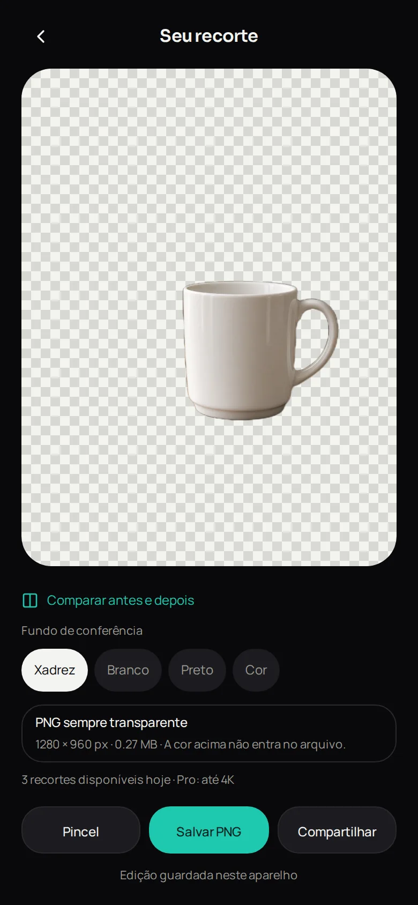

ProjetosVendedores
Fundo Fora
Fundo removido no celular, sem a foto sair do aparelho.
Tire a foto do produto, remova o fundo e exporte um PNG transparente pronto para o anúncio — sem conta, sem marca d’água e sem upload.
Código privado — demonstração sob pedido.
Contado no repositório privado em 24 set 2026.
Direto do app
Telas reais


Capturas do app rodando com dados de exemplo, em 25 set 2026. Clique para ampliar.
Prova de entrega
O que já funciona hoje
Já entregue
- Recorte no aparelho de pessoa e de objeto
- PNG com transparência real e borda suave
- Plano grátis e Pro: 3 recortes por dia ou ilimitado, até 4K
- Cobrança só depois do primeiro recorte bem-sucedido
- Testes automáticos da composição do PNG e do contador diário
- App Android nativo pronto para gerar o pacote da Play Store
Como está construído
- Modelo U²-NetP rodando com ONNX Runtime no próprio aparelho
- Módulo Android nativo em Kotlin
- Testes no GitHub Actions a cada push
- Primeira versão em 5 set 2026
No celular
Da foto ao anúncio
AbreEscolhe a foto do produto.
SelecionaMarca a pessoa ou o objeto que fica.
RemoveO fundo sai no próprio aparelho.
AjustaSuaviza a borda do recorte.
ExportaSalva o PNG transparente para o anúncio.
Por que o Fundo Fora
Privado e pronto para vender
A foto não sai do celular
Nada é enviado a servidor: o recorte acontece no aparelho.
Pronto para anunciar
PNG com transparência real, que funciona em qualquer marketplace.
Grátis para começar
Três recortes por dia, sem criar conta e sem marca d’água.
Em vez de sites que pedem upload e colocam marca d’água: o recorte acontece no aparelho e o arquivo é todo seu.
Transparência
O que vem a seguir
- Para quem é
- Vendedores de marketplace, artesãos, lojas de roupa e pequenos negócios que precisam de foto de produto para anúncio.
- Como usar
- Versão web que roda no aparelho, e app Android pronto para a Play Store.
- Tecnologia
- ONNX Runtime (WASM), modelo U²-NetP (Apache 2.0) e Kotlin.
Vende pela internet?
Me chama no LinkedIn para ver o recorte funcionando com a foto de um produto seu.